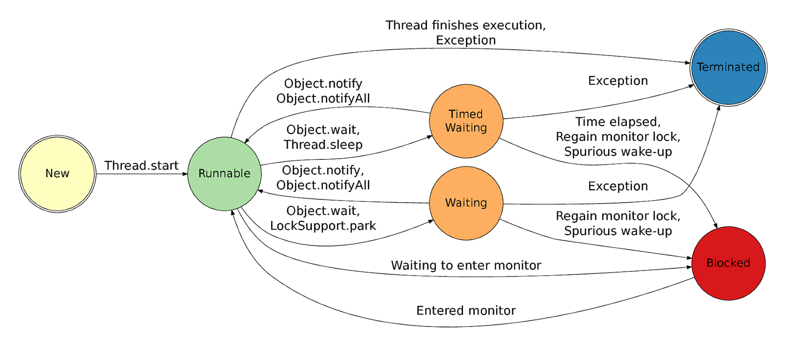

MULTITHREADING FAQ's
What is Thread in Java?
Thread is an independent path of execution. It's way to take advantage of
multiple CPU available in a machine. By employing multiple threads you can
speed up CPU bound task. For example, if one thread takes 100 millisecond
to do a job, you can use 10 thread to reduce that task into 10
millisecond. Java provides excellent support for multi-threading at
language level, and its also one of strong selling point. For more details
see here
Important points about Thread in Java
java.lang.Thread class but JVM plays an important role of all Thread activities. Thread is used to execute task in parallel and this task is coded inside run() method of Runnable interface. You can create Thread in Java programming language by either extending Thread class , implementing Runnable or by using Executor framework in Java. Remember Runnable doesn't represent Thread actually its a task which is executed by Thread. Read more about extends Thread vs implements Runnable here.
1. Thread in Java represent an independent path of execution. (classic definition but I still like it). Thread is represented by
2. During its life time thread remains on various Thread states like NEW, RUNNABLE, BLOCKED, WAITING, TIMED_WAITING which describe what thread is doing.
3. There are two kinds of Thread in Java daemon and non daemon (also called user threads). Java programs runs until there is at least one non-daemon thread exists. First non-daemon thread started by JVM is main thread which is created by JVM and responsible for executing code inside main method in Java. This is called "VM thread" in HotSpot Virtual Machine. Any thread created using java.lang.Thread start() methods from main thread is by default non-daemon but you can make it daemon by calling setDaemon(true) method. Newly created thread in Java inherits daemon property from the thread which creates it. Since main thread is non-daemon, any thread created by it by default remains non-daemon.
4. Every Java threads has priority and name. You can set priority and assign meaningful name while creating object of java.lang.Thread class in Java. its recommend practice to give every thread a meaningful name while creating it , it helps later when you debug your Java program or take thread dump for analysis. Otherwise Java will give your Thread default name like "Thread-number" if Thread is created using java.lang.Thread or "pool-number-thread-number" if Thread is created using ThreadFactory. In Java higher priority thread get preference in Execution over lower priority thread. you can check priority by using method like getPriority() from thread class.
5.Creation of thread is a time-consuming job so having a Thread pool for performing task concurrently is modern day requirement of performance and scalability. Java 5 provides Executor framework which encapsulate task of creating and managing thread from application code. Consider using Thread pool if your application requires to handle load. In web and application server manages this thread pool because each request is processed in its own thread.
6. Thread.sleep() method is used to pause thread for specified duration. It is an overloaded method defined in java.lang.Thread class. On the other hand Thread.join() is used to pause the current thread execution until unless the specified thread is dead and yield() method is used to relinquish CPU so that other thread can acquire it. See difference between sleep, wait and yield for details.
7. wait() and notify() methods are used to communicate between two threads i.e. for inter thread communication in Java. Always check condition of wait() method in loop and call them from synchronized context. wait() is a method which is defined in object class, and puts the current thread on hold and also releases the monitor (lock) held by this thread, while notify() and notifyAll() methods notifies all thread waiting on that monitor. There is no guarantee which thread will picked up by thread scheduler and given CPU to execute because of notification. To learn more about how to use wait, notify and notifyAll method to achieve inter-thread communication, see my post about solving producer consumer problem in Java using wait and notify method.
8. Thread scheduling is done by Thread Scheduler which is platform dependent and stays inside JVM. There is no known way to control thread scheduler from Java and many of thread related decision is done by scheduler like if there are many threads is waiting then which thread will be awarded CPU.
9. Thread.isActive() method is used to check whether a thread is active or not. A thread is said to be active until it has not finished either by returning from run() method normally or due to any exception. Thread.holdsLock() method is used to check if a thread holds a lock or not. See how to check if thread holds lock or not for more details.
10. Every thread in Java has its own stack, which is used to store local variables and method calls. Size of this stack can be controlled using -XX:ThreadStackSize JVM option e.g. -XX:ThreadStackSize=512.
11. Java 5 introduced another way to define task for threads in Java by using Callable interface. It's similar to Runnable interface but provides some more capability e.g. it can return result of task execution, which was not possible in Runnable, because return type of run() method was void. Like its predecessor it define a call() method which can return Future<T> object, you can call get() method on this object to get the result of task execution.
12. Java provides interrupt() method to interrupt a thread in Java. You can interrupt a running thread, waiting thread or sleep thread. This is the control Java provides to prevent a blocked or hanged thread. Once you interrupt a thread, it will also throw InterruptedException, which is a checked exception to ensure that your code should take handle interrupts
13. Java provides two ways to achieve mutual exclusion in your code, either by using synchronized keyword or by using java.util.concurrent.lock implementations. Former is more popular and oldest way to achieve mutual exclusive code but Lock interface is more powerful and provides fine grained control and only available from Java 5. You can use synchronized keyword to either make an entire method mutual exclusive or only critical section by declaring a synchronized block. Any thread needs to hold monitor or lock, required by that critical section in order to enter into synchronized block or method, they release that lock, once they exit, either normally or abruptly due to any error. Acquisition and release of monitor is done by Java itself, so its safe and easy for Java programmer, on the other hand if you decide to use Lock interface, you need to explicitly acquire lock and release it, this requires more caution. Popular idiom is to release the lock in finally block. See my post how to use ReentrantLock in Java for code example and few more details.
14. One more thing to know about Thread in Java is that its not started when you create object of Thread class e.g.
Thread t = new Thread();
In fact thread is started when you call start() method of java.lang.Thread class e.g. t.start() will start the thread. It puts your thread in RUNNABLE state and when thread scheduler assign CPU to this thread, it executes run() method. By default run() method Thread class is empty, so you need to override it to do some meaningful task.
Difference between Thread and Process in Java?
Thread is subset of Process, in other words one process can contain
multiple threads. Two process runs on different memory space,
but all threads share same memory space. Don't confuse
this with stack memory, which is different for different thread and used
to store local data to that thread. For more detail see this answer.
1) Both process and Thread are independent path of execution but one process can have multiple Threads.
2) Every process has its own memory space, executable code and a unique process identifier (PID) while every thread has its own stack in Java but it uses process main memory and share it with other threads.
3) Threads are also refereed as task or light weight process (LWP) in operating system
4) Threads from same process can communicate with each other by using Programming language construct like wait and notify in Java and much simpler than inter process communication.
5) Another difference between Process and Thread in Java is that it's How Thread and process are created. It's easy to create Thread as compared to Process which requires duplication of parent process.
6) All Threads which is part of same process share system resource like file descriptors , Heap Memory and other resource but each Thread has its own Exception handler and own stack in Java.
There were some of the fundamental difference between Process and Thread in Java. Whenever you talk about Process vs Thread, just keep in mind that one process can spawn multiple Thread and share same memory in Java. Each thread has its own stack.
How do you implement Thread in Java?
There are two ways of implementing threading in Java
Before we go into implementation details I just like to cover when we use Thread in Java? So we use thread if we want some part of code is executed parallel and we put that code inside run() method of either Thread class or Runnable interface.
Actually public void run() method is defined in Runnable interface and since java.lang.Thread class implements Runnable interface it gets this method automatically.
In my opinion implementing Runnable is better because in Java we can only extend one class so if we extend Thread class we can not extend any other class while by implementing Runnable interface we still have that option open with us.
Second reason which make sense to me is more on OOPS concept according to OOPS if we extend a class we provide some new feature or functionality , So if the purpose is just to use the run() method to define code its better to use Runnable interface. If you are still not convince on why implementing Runnable is better than extending Thread class for creating threads in Java, I think it's time you should read this article.

So first step is complete, you have implemented thread by now. Next step is to actually create object of thread class and start it. This is will create a separate path of execution parallel to main thread. Java thread is state based so it remains in predefined state at any given time and state transition occurs by calling different thread method. So, when you create object of your class which has implemented Runnable or extended Thread, you just create an object of Thread class, Thread will not start until you call the start() method of java.lang.Thread class. This is shown clearly in above thread state transition diagram in Java. It is now in NEW state, when we call start() method Java Virtual machine execute run() method of that Thread class it goes into RUNNBLE state. Now, it's upto thread scheduler to assign CPU to this thread. From here on it can either complete its execution and go to TERMINATED state or can go into WAITING, TIMED WAITING and BLOCKED state. By the way if you notice, when we call start() method, it eventually calls run() method,
if we call the run() method directly instead of calling start() method no new Thread is created and code inside run() will execute on current Thread.
Read more: http://javarevisited.blogspot.com/2012/03/difference-between-start-and-run-method.html#ixzz3cZxefXkg
That another popular multi-threading interview question and answer is simple there would be no Error or Exception run() method will simply be executed in the same Thread and new Thread will not be created. Another follow up question would be what will happen if you call start() method twice in same Thread object e.g.
mythread.start();
mythread.start(); //this line will throw IllegalThreadStateException
//implementing Thread by extending Thread class
public class MyThread extends
Thread{
public void run(){
System.out.println(" Thread Running " +
Thread.currentThread().getName());
}
}
//implementing Thread by implementing Runnable interface
public class MyRunnable implements Runnable{
public void run(){
System.out.println(" Create Thread
" + Thread.currentThread().getName());
}
}
//starting Thread in Java
Thread mythread = new MyThread(); //Thread created not started
mythread.setName("T1");
Thread myrunnable = new Thread(new MyRunnable(),"T2"); //Thread
created
mythread.start(); //Thread started now but
not running
myrunnable.start();
Bonus Tip
TIP1: It’s not guaranteed that thread mythread will start before thread myrunnable it depends upon Thread scheduler.
TIP2: Thread will be said to go on dead state once execution of run() method finished and you can not start that thread again.
Read more: http://javarevisited.blogspot.com/2011/02/how-to-implement-thread-in-java.html#ixzz3cZk9HWil
When to use Runnable vs Thread in Java?
This is follow-up of previous multi-threading interview question. As we
know we can implement thread either by extending Thread class or
implementing Runnable interface, question arise, which one is better and
when to use one? This question will be easy to answer, if you know that
Java programming language doesn't support multiple inheritance of
class, but it allows you to implement multiple
interface. Which means, its better to implement Runnable than
extends Thread, if you also want to extend another class e.g. Canvas or
CommandListener. For more points and discussion you can also refer this
post.
Difference between start() and run() method of Thread class?
One of trick Java question from early days, but still good enough to
differentiate between shallow understanding of Java threading model start()
method is used to start newly created thread, while start()
internally calls run() method, there is difference calling
run() method directly. When you invoke run() as normal method, its
called in the same thread, no new thread is started, which is
the case when you call start() method. Read this answer for much more
detailed discussion.
Difference between Runnable and Callable in Java?
Both Runnable and Callable represent task which is intended to be executed
in separate thread. Runnable is there from JDK 1.0, while Callable was
added on JDK 1.5. Main difference between these two is that Callable's
call() method can return value and throw Exception, which was
not possible with Runnable's run() method. Callable return Future object,
which can hold result of computation. See my blog post on same topic for
more in-depth answer of this question.
Difference between CyclicBarrier and CountDownLatch in Java?
Though both CyclicBarrier and CountDownLatch wait for number of threads on
one or more events, main difference between them is that you can not
re-use CountDownLatch once count reaches to zero, but you can reuse same
CyclicBarrier even after barrier is broken. See this answer for few
more points and sample code example. CyclicBarrier
and CountDownLatch
What is difference between Executor.submit() and
Executer.execute() method ?
former returns an object of Future which can be used to find result from worker thread
By the way @vinit Saini suggested a very good point related to this core
Java interview question
There is a difference when looking at exception handling. If your tasks
throws an exception and if it was submitted with execute this exception
will go to the uncaught exception handler (when you don't have provided
one explicitly, the default one will just print the stack trace to
System.err). If you submitted the task with submit any thrown exception,
checked exception or not, is then part of the task's return status. For a
task that was submitted with submit and that terminates with an exception,
the Future.get() will re-throw this exception, wrapped in an
ExecutionException.
What is Java Memory model?
Java Memory model is set of rules and guidelines which allows Java
programs to behave deterministically across multiple memory architecture,
CPU, and operating system. It's particularly important in case of
multi-threading. Java Memory Model provides some guarantee on which
changes made by one thread should be visible to others, one of them is
happens-before relationship. This relationship defines several rules which
allows programmers to anticipate and reason behaviour of concurrent Java
programs. For example, happens-before relationship guarantees :
I strongly suggest to read Chapter 16 of Java Concurrency in Practice to understand Java Memory model in more detail.
What is volatile variable in Java?
volatile is a special modifier, which can only be used with instance
variables. In concurrent Java programs, changes made by multiple threads
on instance variables is not visible to other in absence of any
synchronizers e.g. synchronized keyword or locks. Volatile variable
guarantees that a write will happen before any subsequent read, as stated
"volatile variable rule" in previous question. Read this answer to learn
more about volatile variable and when to use them.
What is thread-safety? is Vector a thread-safe class? (Yes, see
details)
Thread-safety is a property of an object or code which guarantees that if
executed or used by multiple thread in any manner e.g. read vs write it
will behave as expected. For example, a thread-safe counter object will
not miss any count if same instance of that counter is shared among
multiple threads. Apparently, you can also divide collection classes in
two category, thread-safe and non-thread-safe. Vector is indeed a
thread-safe class and it achieves thread-safety by synchronizing methods
which modifies state of Vector, on the other hand, its counterpart
ArrayList is not thread-safe.
What is race condition in Java? Given one example?
Race condition are cause of some subtle programming bugs when Java
programs are exposed to concurrent execution environment. As name
suggests, race condition occurs due to race between multiple threads, if a
thread which is supposed to execute first lost the race and executed
second, behaviour of code changes, which surface as non-deterministic
bugs. This is one of the hardest bugs to find and re-produce because of
random nature of racing between threads. One example of race condition is
out-of-order processing, see this answer for some more example of race
conditions in Java programs.
How to stop thread in Java?
I always said that Java provides rich APIs for everything but ironically
Java doesn't provide a sure shot way of stopping thread. There was some
control methods in JDK 1.0 e.g. stop(), suspend() and resume() which was
deprecated in later releases due to potential deadlock threats, from then
Java API designers has not made any effort to provide a consistent,
thread-safe and elegant way to stop threads. Programmers mainly rely on
the fact that thread stops automatically as soon as they finish execution
of run() or call() method. To manually stop, programmers either take
advantage of volatile boolean variable and check in every iteration if run
method has loops or interrupt threads to abruptly cancel tasks. See this
tutorial for sample code of stopping thread in Java.
What happens when an Exception occurs in a thread?
This is one of the good tricky Java question I have seen on interviews. In
simple words, If not caught thread will die, if an uncaught exception
handler is registered then it will get a call back.
Thread.UncaughtExceptionHandler is an interface, defined as nested
interface for handlers invoked when a Thread abruptly terminates due to an
uncaught exception.
When a thread is about to terminate due to an uncaught exception the Java Virtual Machine will query the thread for its UncaughtExceptionHandler using Thread.getUncaughtExceptionHandler() and will invoke the handler's uncaughtException() method, passing the thread and the exception as arguments.
How do you share data between two thread in Java?
You can share data between threads by using shared object, or concurrent
data-structure like BlockingQueue. See this tutorial to learn inter thread
communication in Java. It implements Producer consumer pattern using wait
and notify methods, which involves sharing objects between two threads.
Difference between notify and notifyAll in Java?
This is another tricky questions from core Java interviews, since multiple
threads can wait on single monitor lock, Java API designer provides method
to inform only one of them or all of them, once waiting condition changes,
but they provide half implementation. There notify() method doesn't
provide any way to choose a particular thread, that's why its only useful
when you know that there is only one thread is waiting. On the other hand,
notifyAll() sends notification to all threads and allows them to compete
for locks, which ensures that at-least one thread will proceed further.
See my blog post on similar topic for more detailed answer and code
example.
Why wait, notify and notifyAll are not inside thread class?
This is a design related question, which checks what candidate thinks
about existing system or does he ever thought of something which is so
common but looks in-appropriate at first. In order to answer this
question, you have to give some reasons why it make sense for these three
method to be in Object class, and why not on Thread class. One reason
which is obvious is that Java provides lock at object level not at thread
level. Every object has lock, which is acquired by thread. Now if thread
needs to wait for certain lock it make sense to call wait() on that object
rather than on that thread. Had wait() method declared on Thread class, it
was not clear that for which lock thread was waiting. In short, since
wait, notify and notifyAll operate at lock level, it make sense to defined
it on object class because lock belongs to object. You can also see this
article for more elaborate answer of this question.
What is ThreadLocal variable in Java?
ThreadLocal variables are special kind of variable available to Java
programmer. Just like instance variable is per instance, ThreadLocal
variable is per thread. It's a nice way to achieve thread-safety of
expensive-to-create objects, for example you can make SimpleDateFormat
thread-safe using ThreadLocal. Since that class is expensive, its not good
to use it in local scope, which requires separate instance on each
invocation. By providing each thread their own copy, you shoot two birds
in one arrow. First, you reduce number of instance of expensive object by
reusing fixed number of instances, and Second, you achieve thread-safety
without paying cost of synchronization or immutability. Another good
example of thread local variable is ThreadLocalRandom class, which reduces
number of instances of expensive-to-create Random object in
multi-threading environment. See this answer to learn more about thread
local variables in Java.
http://javarevisited.blogspot.sg/2012/05/how-to-use-threadlocal-in-java-benefits.html
What is FutureTask in Java?
FutureTask represents a cancellable asynchronous computation in concurrent
Java application. This class provides a base implementation of Future,
with methods to start and cancel a computation, query to see if the
computation is complete, and retrieve the result of the computation. The
result can only be retrieved when the computation has completed; the get
methods will block if the computation has not yet completed. A FutureTask
object can be used to wrap a Callable or Runnable object. Since FutureTask
also implements Runnable, it can be submitted to an Executor for
execution.
Difference between interrupted and isInterrupted method in Java?
Main difference between interrupted() and isInterrupted() is that former
clears the interrupt status while later does not. The interrupt mechanism
in Java multi-threading is implemented using an internal flag known as the
interrupt status. Interrupting a thread by calling Thread.interrupt() sets
this flag. When interrupted thread checks for an interrupt by invoking the
static method Thread.interrupted(), interrupt status is cleared. The
non-static isInterrupted() method, which is used by one thread to query
the interrupt status of another, does not change the interrupt status
flag. By convention, any method that exits by throwing an
InterruptedException clears interrupt status when it does so. However,
it's always possible that interrupt status will immediately be set again,
by another thread invoking interrupt
Why wait and notify method are called from synchronized block?
Main reason for calling wait and notify method from either synchronized
block or method is that it made mandatory by Java API. If you don't call
them from synchronized context, your code will throw
IllegalMonitorStateException. A more subtle reason is to avoid race
condition between wait and notify calls. To learn more about this, check
my similarly titled post here.
Why you should check condition for waiting in a loop?
Its possible for a waiting thread to receive false alerts and spurious
wake up calls, if it doesn't check the waiting condition in loop, it will
simply exit even if condition is not met. As such, when a waiting thread
wakes up, it cannot assume that the state it was waiting for is still
valid. It may have been valid in the past, but the state may have been
changed after the notify() method was called and before the waiting thread
woke up. That's why it always better to call wait() method from loop, you
can even create template for calling wait and notify in Eclipse. To learn
more about this question, I would recommend you to read Effective Java
items on thread and synchronization.
Difference between synchronized and concurrent collection in Java?
Though both synchronized and concurrent collection provides thread-safe
collection suitable for multi-threaded and concurrent access, later is
more scalable than former. Before Java 1.5, Java programmers only had
synchronized collection which becomes source of contention if multiple
thread access them concurrently, which hampers scalability of system. Java
5 introduced concurrent collections like ConcurrentHashMap, which not only
provides thread-safety but also improves scalability by using modern
techniques like lock stripping and partitioning internal table. See this
answer for more differences between synchronized and concurrent collection
in Java.
The synchronized collections classes, Hashtable and Vector, and the
synchronized wrapper classes, Collections.synchronizedMap() and
Collections.synchronizedList(), provides a basic conditionally thread-safe
implementation of Map and List.
However, several factors make them unsuitable for use in highly concurrent
applications -- their single collection-wide lock is an impediment to
scalability and it often becomes necessary to lock a collection for a
considerable time during iteration to prevent
ConcurrentModificationException.
The ConcurrentHashMap and CopyOnWriteArrayList implementations provide much higher concurrency while preserving thread safety, with some minor compromises in their promises to callers. ConcurrentHashMap and CopyOnWriteArrayList are not necessarily useful everywhere you might use HashMap or ArrayList, but are designed to optimize specific common situations. Many concurrent applications will benefit from their use.
So what is the difference between Hashtable and ConcurrentHashMap , both can be used in multi-threaded environment but once the size of Hashtable becomes considerable large performance degrade because for iteration it has to be locked for longer duration.
Since ConcurrentHashMap introduced concept of segmentation, It doesn't mater whether how large it becomes because only certain part of it get locked to provide thread safety so many other readers can still access map without waiting for iteration to complete.
Read more:
http://javarevisited.blogspot.com/2010/10/what-is-difference-between-synchronized.html#ixzz3cfZyeuKh
Difference between Stack and Heap in Java?
Why do someone this question as part of multi-threading and concurrency?
because Stack is a memory area which is closely associated with threads.
To answer this question, both stack and heap are specific memories in Java
application. Each thread has their own stack, which is used to store local
variables, method parameters and call stack. Variable stored in one
Thread's stack is not visible to other. On other hand, heap is a common
memory area which is shared by all threads. Objects whether local or at
any level is created inside heap. To improve performance thread tends to
cache values from heap into their stack, which can create problems if that
variable is modified by more than one thread, this is where volatile
variables comes in picture. volatile suggest threads to read value of
variable always from main memory. See this article to learn more about
stack and heap in Java to answer this question in greater detail.
What is thread pool? Why should you thread pool in Java?
Creating thread is expensive in terms of time and resource. If you create
thread at time of request processing it will slow down your response time,
also there is only a limited number of threads a process can create. To
avoid both of these issue, a pool of thread is created when application
starts-up and threads are reused for request processing. This pool of
thread is known as "thread pool" and threads are known as worker thread.
From JDK 1.5 release, Java API provides Executor framework, which allows
you to create different types of thread pools e.g. single thread pool,
which process one task at a time, fixed thread pool (a pool of fixed
number of thread) or cached thread pool (an expandable thread pool
suitable for applications with many short lived tasks). See this article
to learn more about thread pools in Java to prepare detailed answer of
this question.
Write code to solve Producer Consumer problem in Java?
Most of the threading problem you solved in real world are of category of
Producer consumer pattern, where one thread is producing task and other
thread is consuming that. You must know how to do inter thread
communication to solve this problem. At lowest level, you can use wait and
notify to solve this problem, and at high level you can leverage Semaphore
or BlockingQueue to implement Producer consumer pattern, as shown in this
tutorial.
How do you avoid deadlock in Java? Write Code?
deadlock in multithreading Java
Deadlock is a condition in which two threads wait for each other to take
action which allows them to move further. It's a serious issue because
when it happen your program hangs and doesn't do the task it is intended
for. In order for deadlock to happen, following four condition must be
true :
Mutual Exclusion : At least one resource must be held in a non-shareable
mode. Only one process can use the resource at any given instant of time.
Hold and Wait : A process is currently holding at least one resource and
requesting additional resources which are being held by other processes.
No Pre-emption : The operating system must not de-allocate resources once
they have been allocated; they must be released by the holding process
voluntarily.
Circular Wait : A process must be waiting for a resource which is being
held by another process, which in turn is waiting for the first process to
release the resource.
Easiest way to avoid deadlock is to prevent Circular wait, and this can be done by acquiring locks in a particular order and releasing them in reverse order, so that a thread can only proceed to acquire a lock if it held the other one. Check this tutorial for actual code example and detailed discussion on techniques of avoiding deadlock in Java.
Difference between livelock and deadlock in Java?
This question is extension of previous interview question. A livelock is
similar to a deadlock, except that the states of the threads or processes
involved in the livelock constantly change with regard to one another,
without any one progressing further. Livelock is a special case of
resource starvation. A real-world example of livelock occurs when two
people meet in a narrow corridor, and each tries to be polite by moving
aside to let the other pass, but they end up swaying from side to side
without making any progress because they both repeatedly move the same way
at the same time. In short, main difference between livelock and deadlock
is that in former state of process change but no progress is made.
How do you check if a Thread holds a lock or not?
There is a method called holdsLock() on java.lang.Thread, it returns true
if and only if the current thread holds the monitor lock on the specified
object. You can also check this article for more detailed answer.
How do you take thread dump in Java?
There are multiple ways to take thread dump of Java process depending upon
operating system. When you take thread dump, JVM dumps state of all
threads in log files or standard error console. In windows you can use
Ctrl + Break key combination to take thread dump, on Linux you can use
kill -3 command for same. You can also use a tool called jstack for taking
thread dump, it operate on process id, which can be found using another
tool called jps.
Which JVM parameter is used to control stack size of thread?
This is the simple one, -Xss parameter is used to control stack size of
Thread in Java. You can see this list of JVM options to learn more about
this parameter.
Difference between synchronized and ReentrantLock in Java?
There were days when only way to provide mutual exclusion in Java was via
synchronized keyword, but it has several shortcomings e.g. you can not
extend lock beyond a method or block boundary, you can not give up trying
for a lock etc. Java 5 solves this problem by providing more sophisticated
control via Lock interface. ReentrantLock is a common implementation of
Lock interface and provides re-entrant mutual exclusion Lock with the same
basic behaviour and semantics as the implicit monitor lock accessed using
synchronized methods and statements, but with extended capabilities. See
this article to learn about those capabilities and some more differences
between synchronized vs ReentrantLock in Java.
There are three threads T1, T2 and T3? How do you ensure sequence
T1, T2, T3 in Java?
Sequencing in multi-threading can be achieved by different means but you
can simply use join() method of thread class to start a thread when
another one is finished its execution. To ensure three threads execute you
need to start the last one first e.g. T3 and then call join methods in
reverse order e.g. T3 calls T2. join, and T2 calls T1.join, this ways T1
will finish first and T3 will finish last. To learn more about join
method, see this tutorial.
What does yield method of Thread class do?
Yield method is one way to request current thread to relinquish CPU so
that other thread can get chance to execute. Yield is a static method and
only guarantees that current thread will relinquish the CPU but doesn't
say anything about which other thread will get CPU. Its possible for same
thread to get CPU back and start its execution again. See this article to
learn more about yield method and to answer this question better.
What is concurrence level of ConcurrentHashMap in Java?
ConcurrentHashMap achieves it's scalability and thread-safety by
partitioning actual map into number of sections. This partitioning is
achieved using concurrency level. It's optional parameter of
ConcurrentHashMap constructor and it's default value is 16. The table is
internally partitioned to try to permit the indicated number of concurrent
updates without contention. To learn more about concurrency level and
internal resizing, see my post How ConcurrentHashMap works in Java.
What is Semaphore in Java?
Semaphore in Java is a new kind of synchronizer. It's a counting
semaphore. Conceptually, a semaphore maintains a set of permits. Each
acquire() blocks if necessary until a permit is available, and then takes
it. Each release() adds a permit, potentially releasing a blocking
acquirer. However, no actual permit objects are used; the Semaphore just
keeps a count of the number available and acts accordingly. Semaphore is
used to protect expensive resource which is available in fixed number e.g.
database connection in pool. See this article to learn more about counting
Semaphore in Java.
What happens if you submit task, when queue of thread pool is
already fill?
This is another tricky question in my list. Many programmer will think
that it will block until a task is cleared but its true.
ThreadPoolExecutor's submit() method throws RejectedExecutionException if
the task cannot be scheduled for execution.
Difference between submit() and execute() method thread pool in
Java?
Both method are ways to submit task to thread pools but there is slight
difference between them. execute(Runnable command) is defined in Executor
interface and executes given task in future, but more importantly it does
not return anything. It's return type is void. On other hand submit() is
overloaded method, it can take either Runnable or Callable task and can
return Future object which can hold pending result of computation. This
method is defined on ExecutorService interface, which extends Executor
interface, and every other thread pool class e.g. ThreadPoolExecutor or
ScheduledThreadPoolExecutor gets these methods. To learn more about thread
pools you can check this article.
What is blocking method in Java?
A blocking method is a method which blocks until task is done, for example
accept() method of ServerSocket blocks until a client is connected. here
blocking means control will not return to caller until task is finished.
On the other hand there are asynchronous or non-blocking method which
returns even before task is finished. To learn more about blocking method
see this answer.
Is Swing thread-safe? What do you mean by Swing thread-safe?
You can simply this question as No, Swing is not thread-safe, but you have
to explain what you mean by that even if interviewer doesn't ask about it.
When we say swing is not thread-safe we usually refer its component, which
can not be modified in multiple threads. All update to GUI components has
to be done on AWT thread, and Swing provides synchronous and asynchronous
callback methods to schedule such updates. You can also read my article to
learn more about swing and thread-safety to better answer this question.
Even next two questions are also related to this concept.
Difference between invokeAndWait and invokeLater in Java?
These are two methods Swing API provides Java developers to update GUI
components from threads other than Event dispatcher thread.
InvokeAndWait() synchronously update GUI component, for example a progress
bar, once progress is made, bar should also be updated to reflect that
change. If progress is tracked in a different thread, it has to call
invokeAndWait() to schedule an update of that component by Event
dispatcher thread. On other hand, invokeLater() is asynchronous call to
update components. You can also refer this answer for more points.
Which method of Swing API are thread-safe in Java?
This question is again related to swing and thread-safety, though
components are not thread-safe there are certain method which can be
safely call from multiple threads. I know about repaint(), and
revalidate() being thread-safe but there are other methods on different
swing components e.g. setText() method of JTextComponent, insert() and
append() method of JTextArea class.
How to create Immutable object in Java?
This question might not look related to multi-threading and concurrency,
but it is. Immutability helps to simplify already complex concurrent code
in Java. Since immutable object can be shared without any synchronization
its very dear to Java developers. Core value object, which is meant to be
shared among thread should be immutable for performance and simplicity.
Unfortunately there is no @Immutable annotation in Java, which can make
your object immutable, hard work must be done by Java developers. You need
to keep basics like initializing state in constructor, no setter methods,
no leaking of reference, keeping separate copy of mutable object to create
Immutable object. For step by step guide see my post, how to make an
object Immutable in Java. This will give you enough material to answer
this question with confidence.
What is ReadWriteLock in Java?
A ReadWriteLock maintains a pair of associated locks, one for read-only
operations and one for writing. The read lock may be held simultaneously
by multiple reader threads, so long as there are no writers. The write
lock is exclusive. If you want you can implement this interface with your
own set of rules, otherwise you can use ReentrantReadWriteLock, which
comes along with JDK and supports a maximum of 65535 recursive write locks
and 65535 read locks.
What is busy spin in multi-threading?
Busy spin is a technique which concurrent programmers employ to make a
thread wait on certain condition. Unlike traditional methods e.g. wait(),
sleep() or yield() which all involves relinquishing CPU control, this
method does not relinquish CPU, instead it just runs empty loop. Why would
someone do that? to preserve CPU caches. In multi core system, its
possible for a paused thread to resume on different core, which means
rebuilding cache again. To avoid cost of rebuilding cache, programmer
prefer to wait for much smaller time doing busy spin. You can also see
this answer to learn more about this question.
Difference between volatile and atomic variable in Java?
This is an interesting question for Java programmer, at first, volatile
and atomic variable look very similar, but they are different. Volatile
variable provides you happens-before guarantee that a write will happen
before any subsequent write, it doesn't guarantee atomicity. For example
count++ operation will not become atomic just by declaring count variable
as volatile. On the other hand AtomicInteger class provides atomic method
to perform such compound operation atomically e.g. getAndIncrement() is
atomic replacement of increment operator. It can be used to atomically
increment current value by one. Similarly you have atomic version for
other data type and reference variable as well.
What happens if a thread throws an Exception inside synchronized
block?
This is one more tricky question for average Java programmer, if he can
bring the fact about whether lock is released or not is key indicator of
his understanding. To answer this question, no matter how you exist
synchronized block, either normally by finishing execution or abruptly by
throwing exception, thread releases the lock it acquired while entering
that synchronized block. This is actually one of the reason I like
synchronized block over lock interface, which requires explicit attention
to release lock, generally this is achieved by releasing lock in finally
block.
What is double checked locking of Singleton?
This is one of the very popular question on Java interviews, and despite
its popularity, chances of candidate answering this question satisfactory
is only 50%. Half of the time, they failed to write code for double
checked locking and half of the time they failed how it was broken and
fixed on Java 1.5. This is actually an old way of creating thread-safe
singleton, which tries to optimize performance by only locking when
Singleton instance is created first time, but because of complexity and
the fact it was broken for JDK 1.4, I personally don't like it.
Anyway, even if you not prefer this approach its good to know from
interview point of view. Since this question deserve a detailed answer, I
have answered in a separate post, you can read my post how double checked
locking on Singleton works to learn more about it.
How to create thread-safe Singleton in Java?
This question is actually follow-up of previous question. If you say you
don't like double checked locking then Interviewer is bound to ask about
alternative ways of creating thread-safe Singleton class. There are
actually man, you can take advantage of class loading and static variable
initialization feature of JVM to create instance of Singleton, or you can
leverage powerful enumeration type in Java to create Singleton. I actually
preferred that way, you can also read this article to learn more about it
and see some sample code.
List down 3 multi-threading best practice you follow?
This is my favourite question, because I believe that you must follow
certain best practices while writing concurrent code which helps in
performance, debugging and maintenance. Following are three best
practices, I think an average Java programmer should follow :
How do you force start a Thread in Java?
This question is like how do you force garbage collection in Java, their
is no way, though you can make request using System.gc() but its not
guaranteed. On Java multi-threading their is absolute no way to force
start a thread, this is controlled by thread scheduler and Java exposes no
API to control thread schedule. This is still a random bit in Java.
What is fork join framework in Java?
The fork join framework, introduced in JDK 7 is a powerful tool available
to Java developer to take advantage of multiple processors of modern day
servers. It is designed for work that can be broken into smaller pieces
recursively. The goal is to use all the available processing power to
enhance the performance of your application. One significant advantage of
The fork/join framework is that it uses a work-stealing algorithm. Worker
threads that run out of things to do can steal tasks from other threads
that are still busy. See this article for much more detailed answer of
this question.
What is difference between calling wait() and sleep() method in
Java multi-threading?
Though both wait and sleep introduce some form of pause in Java
application, they are tool for different needs. Wait method is used for
inter thread communication, it relinquish lock if waiting condition is
true and wait for notification when due to action of another thread
waiting condition becomes false. On the other hand sleep() method is just
to relinquish CPU or stop execution of current thread for specified time
duration. Calling sleep method doesn't release the lock held by current
thread. You can also take look at this article to answer this question
with more details.
Read more: http://javarevisited.blogspot.com/2014/07/top-50-java-multithreading-interview-questions-answers.html#ixzz3cVKUxrXq
What is the advantage of new Lock interface over synchronized
block in Java? You need to implement a high
performance cache which allows multiple reader but single writer to keep
the integrity how will you implement it?
The major advantage of lock interfaces on multi-threaded and concurrent
programming is they provide two separate lock for reading and writing
which enables you to write high performance data structure like
ConcurrentHashMap and conditional blocking. This java threads interview
question is getting increasingly popular and more and more follow-up
questions come based upon answer of interviewee. I would strongly suggest
reading Locks before appearing for any java multi-threading interview
because now days Its heavily used to build cache for electronic
trading system on client and exchange connectivity space.
What are differences between wait and sleep method in java?
Another frequently asked thread interview question in Java mostly appear
in phone interview. Only major difference is wait release the lock or
monitor while sleep doesn't release any lock or monitor while waiting.
Wait is used for inter-thread communication while sleep is used to
introduce pause on execution. See my post wait vs sleep in Java for more
differences
Write code to implement blocking queue in Java?
This is relatively tough java multi-threading interview question which
servers many purpose, it checks whether candidate can actually write Java
code using thread or not, it sees how good candidate is on understanding
concurrent scenarios and you can ask lot of follow-up question based upon
his code. If he uses wait() and notify() method to implement blocking
queue, Once interviewee successfully writes it you can ask him to
write it again using new java 5 concurrent classes etc.
Write code to solve the Produce consumer problem in Java?
Similar to above questions on thread but more classic in nature, some time
interviewer ask follow up questions How do you solve producer consumer
problem in Java, well it can be solved in multiple way, I have shared one
way to solve producer consumer problem using BlockingQueue in Java , so be
prepare for surprises. Some time they even ask to implement solution of
dining philosopher problem as well.
Write a program which will result in deadlock? How will you fix
deadlock in Java?
Java thread interview questions and answers This is my favorite java
thread interview question because even though deadlock is quite common
while writing multi-threaded concurrent program many candidates not able
to write deadlock free code and they simply struggle. Just ask them you
have n resources and n thread and to complete an operation you require all
resources. Here n can be replace with 2 for simplest case and higher
number to make question more intimidating. see How to avoid deadlock
in java for more information on deadlock in Java.
(below need to be revisited)
What is atomic operation? What are atomic operations in Java?
Simple java thread interview questions, another follow-up is do you need
to synchronized an atomic operation? :) You can read more about java
synchronization here.
How will you awake a blocked thread in java?
This is tricky question on threading, blocking can result on many ways, if
thread is blocked on IO then I don't think there is a way to interrupt the
thread, let me know if there is any, on the other hand if thread is
blocked due to result of calling wait(), sleep() or join() method you can
interrupt the thread and it will awake by throwing InterruptedException.
See my post How to deal with blocking methods in Java for more information
on handling blocked thread.
What is difference between CyclicBarriar and CountdownLatch in
Java ?
New java thread interview questions mostly to check familiarity with JDK 5
concurrent packages. One difference is that you can reuse CyclicBarrier
once barrier is broken but you can not reuse ContdownLatch.
14) What is immutable object? How does it help on writing concurrent
application?
Another classic interview questions on multi-threading, not directly
related to thread but indirectly helps a lot. This java interview question
can become more tricky if ask you to write an immutable class or ask you
Why String is immutable in Java as follow-up.
15) What are some common problems you have faced in multi-threading
environment? How did you resolve it?
Memory-interference, race conditions, deadlock, live lock and starvation
are example of some problems comes in multi-threading and concurrent
programming. There is no end of problem if you get it wrong and they will
be hard to detect and debug. This is mostly experienced based interview
question on java thread instead of fact based.
Update:
One of Javarevisited reader, Hemant has contributed some more thread
interview questions in Java, though he hasn’t provide answer and left that
job for me, I will certainly do when time allows, just like I have
recently updated 10 Singleton interview question in Java with answers. If
you guys know answers of this java concurrency questions than please post
as comment:
Here is his comment “Good questions on multi-threading though you may need to prepare more in order to clear any multi-threading interview, you need to be familiar with concept of immutability, thread-safety, race condition and many more. 10 or 15 question is good for quick recap but you at-least need to prepare more than 50 questions on threading and concurrency to perform better on Java interview. You can find some interesting thread question below which is no doubt highly popular –
1) Difference between green thread and native thread in Java?
2) Difference between thread and process?
3) What is context switching in multi-threading?
4) Difference between deadlock and livelock, deadlock and
starvation?
5) What thread-scheduling algorithm is used in Java?
What is thread-scheduler in Java?
Thread scheduler in java is the part of the JVM that decides which thread should run.There is no guarantee that which runnable thread will be chosen to run by the thread scheduler.Only one thread at a time can run in a single process.The thread scheduler mainly uses preemptive or time slicing scheduling to schedule the threads.
Difference between preemptive scheduling and time slicing
Under preemptive scheduling, the highest priority task executes until it enters the waiting or dead states or a higher priority task comes into existence. Under time slicing, a task executes for a predefined slice of time and then reenters the pool of ready tasks. The scheduler then determines which task should execute next, based on priority and other factors.
7) How do you handle un-handled exception in thread?
8) What is thread-group, why its advised not to use thread-group in
Java?
9) Why Executor framework is better than creating and managing
thread by application ?
10) Difference between Executor and Executors in Java?
10) How to find which thread is taking maximum cpu in windows and Linux
server?
Read more:
http://javarevisited.blogspot.com/2011/07/java-multi-threading-interview.html#ixzz3cVFoD1GO